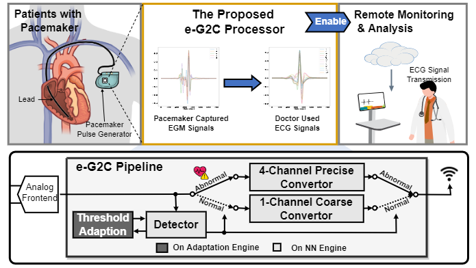
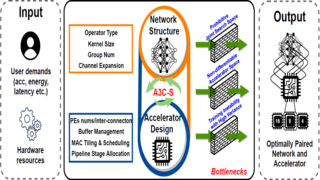

|
I received my Ph.D. from Georgia Tech in 2025, and my M.S. from Rice University in 2023. My advisor is Prof. Yingyan (Celine) Lin. I received my B.S. from Rice University. My research focuses on AI-enabled hardware design automation and software/hardware co-design for efficient AI. Google Scholar / CV / LinkedIn / GitHub / |
Email: yzhang919[at]gatech[dot]edu |
{kind=link}
|
SLAVA: Scalable LLM-Driven Verilog Design With an Assertion-Guided Automated Self-Refinement Loop
Yongan (Luke) Zhang, Zhongzhi Yu, Zhifan Ye, Sixu Li, Chaojian Li, and Yingyan (Celine) Lin Under Review, 2025 A scalable LLM-driven framework for an automated loop of Verilog design generation and assertion-guided functional refinement. SLAVA aims to shift the role of LLMs from passive code generators to active design agents engaged throughout the hardware-development process. |
|

|
Re-CATA: Real-Time and Flexible Accelerator Design Framework for On-device Codec Avatars
Yongan (Luke) Zhang, Yuecheng Li, Syed Shakib Sarwar, H. Ekin Sumbul, Yonggan Fu, Haoran You, Cheng Wan, and Yingyan (Celine) Lin TCAD, 2025 A full-stack and flexible hardware accelerator design framework, integrating a specialized workload and resource partition scheme, a run-time scheduler, and a micro-architecture design dedicated to Codec Avatars applications and beyond. |
|
MG-Verilog: Multi-grained Dataset Towards Enhanced LLM-assisted Verilog
Generation
Yongan (Luke) Zhang, Zhongzhi Yu, Yonggan Fu, Cheng Wan, Yingyan (Celine) Lin LAD (Best Paper), 2024 An automated framework for data generation and validation, designed to enhance the fine-tuning of Large Language Models (LLMs) in accelerator code generation. |
|
|
AutoAI2C: An Automated Hardware Generator for DNN Acceleration on both FPGA
and ASIC
Yongan (Luke) Zhang, Xiaofan Zhang, Pengfei Xu, Yang Zhao, Cong Hao, Deming Chen, and Yingyan (Celine) Lin TCAD, 2024 A DNN chip generator that can automatically generate both FPGA-and ASIC-based DNN accelerator implementation (i.e., synthesizable hardware and deployment code) with optimized algorithm-to-hardware mapping. |
|
|
GPT4AIGChip: Towards Next-Generation AI Accelerator Design Automation via
Large Language Models
Yonggan Fu*, Yongan (Luke) Zhang*, Zhongzhi Yu*, Sixu Li, Zhifan Ye, Chaojian Li, Cheng Wan, Yingyan (Celine) Lin ICCAD, 2023 An automated demo-augmented prompt-generation pipeline utilizing in-context learning to guide LLMs towards creating high-quality AI accelerator design. |
|
|  |
e-G2C: A 0.14-to-8.31 µJ/Inference NN-based Processor with Continuous
On-chip Adaptation for Anomaly Detection and ECG Conversion from EGM
Yang Zhao, Yongan (Luke) Zhang, Yonggan Fu, Xu Ouyang, Cheng Wan, Shang Wu, Anton Banta, Mathews M. John, Allison Post, Mehdi Razavi, Joseph Cavallaro, Behnaam Aazhang, and Yingyan (Celine) Lin VLSI, 2022 Silicon-validated dedicated EGM-to-ECG processor, with continuous lightweight anomaly detection, event-driven coarse/precise conversion, and on-chip adaptation |
|
RT-RCG: Neural network and accelerator search towards effective and
real-time ECG reconstruction from intracardiac electrograms
Yongan (Luke) Zhang, Anton Banta, Yonggan Fu, Mathews M. John, Allison Post, Mehdi Razavi, Joseph R. Cavallaro, Behnaam Aazhang, and Yingyan (Celine) Lin JETC, 2022 An automatically search framework for (1) efficient Deep Neural Network (DNN) structures and then (2) corresponding accelerators, to enable Real-Time and high-quality Reconstruction of ECG signals from EGM signals |
|
|
G-CoS: GNN-Accelerator Co-Search Towards Both Better Accuracy and
Efficiency
Yongan (Luke) Zhang, Haoran You, Yonggan Fu, Tong Geng, Ang Li, and Yingyan (Celine) Lin ICCAD, 2021 A GNN and accelerator co-search framework that can automatically search for matched GNN structures and accelerators to maximize both task accuracy and acceleration efficiency. |
|
|
I-GCN: A Graph Convolutional Network Accelerator with Runtime Locality
Enhancement through Islandization
Tong Geng, Chunshu Wu, Yongan (Luke) Zhang, Cheng Tang, Chenhao Xie, Haoran You, Martin Herbordt, Yingyan (Celine) Lin, and Ang Li MICRO, 2021 A novel hardware accelerator for GCN inference that significantly improves data locality and reduces unnecessary computation through a new online graph restructuring algorithm we refer to as islandization. |
|
|
DIAN: Differentiable Accelerator-Network Co-Search Towards Maximal DNN
Efficiency
Yongan (Luke) Zhang, Yonggan Fu, Weiwen Jiang, Chaojian Li, Haoran You, Meng Li, Vikas Chandra, and Yingyan (Celine) Lin ISLPED, 2021 A Differentiable Accelerator Network Co-Search framework for automatically searching for matched networks and accelerators to maximize both the accuracy and efficiency |
|
|  |
A3C-S: Automated Agent Accelerator Co-Search towards Efficient Deep
Reinforcement Learning
Yonggan Fu, Yongan (Luke) Zhang, Chaojian Li, Zhongzhi Yu, and Yingyan (Celine) Lin DAC, 2021 Automated Agent Accelerator Co-Search (A3C-S) framework, which automatically co-searches the optimally matched DRL agents and accelerators that maximize both the test scores and hardware efficiency. |
|
Auto-NBA: Efficient and Effective Search Over The Joint Space of Networks,
Bitwidths, and Accelerators
Yonggan Fu, Yongan (Luke) Zhang, Yang Zhang, David Cox, and Yingyan (Celine) Lin ICML, 2021 An automated framework enabling jointly searching for the Networks, Bitwidths, and Accelerators, by efficiently localizing the optimal design within the huge joint design space for each target dataset and acceleration specification. |
|
Design and source code from Jon Barron's website. |